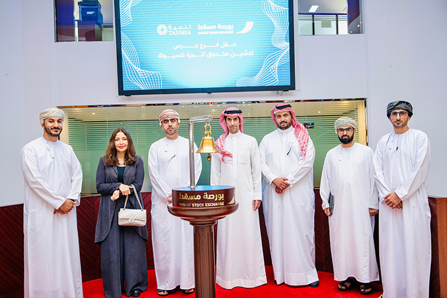
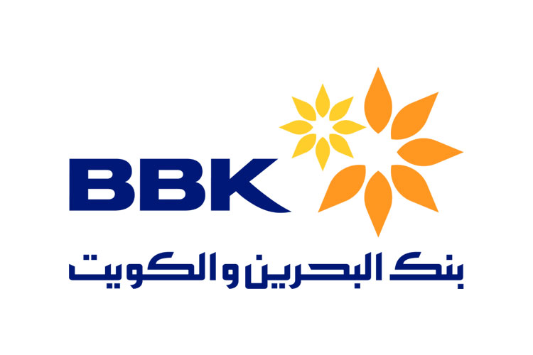
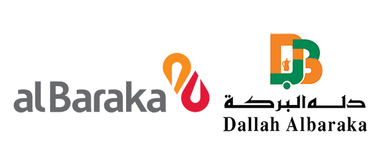

SICO, in collaboration with Oman National Investment Development Company "Tanmia," a leading investment and fund management company, acted as the investment manager for the launch of the “Tanmia Liquidity Fund,” inaugurated at the Muscat Stock Exchange (MSX). The fund was valued at USD 126 million, it successfully enhanced market depth and boosted liquidity on the exchange while achieving long-term capital growth. The timing of the Fund’s launch strategically aligned with the ongoing reforms in the Omani capital markets, which include IPO announcements, new market making regulations, and increased MSX marketing efforts through roadshows and other promotional activities.
SICO announces the launch of International Bonds and sukuk trading for a minimum of USD 50,000, compared to the standard minimum investment of USD 200,000. This will offer clients increased opportunities to diversify their Bonds and sukuk investments.GCC bond markets have proved resilient thus far in the face of interest rate volatility. Growing expectations for a lower interest environment in the near future present a positive incentive for investing in fixed-income instruments. Fractional bonds and sukuks are exclusively available to SICO’s clients and will be traded and custodied exclusively with SICO.
Gulf Tamin Ltd, a consortium led by Lepercq, de Neuflize & Co, a New York-based financial company, and Callaway Capital Management LLC, a U.S.-based hedge fund, acquired 13.85% of Arab Insurance Group (ARIG). Gulf Tamin Ltd. was advised by SICO; our team is committed to maintaining the role as the leading regional asset manager, broker, and investment bank.

SICO successfully completed its role as Joint Lead Manager and Bookrunner, alongside regional and international banks, for BBK’s benchmark 5-year bond, yielding 6.875%. The order book closed at approximately USD 1 billion, a clear indication of BBK’s robust financial performance and its prominent position in the market. SICO is dedicated to expanding liquidity and creating new funding opportunities for clients in the GCC region.
The Elzaad Sukuk Fund, which invests in a diversified portfolio of Sukuk and other Sharia-compliant fixed income instruments issued by sovereign, quasi-sovereign, and private issuers from the MENA region, aims to maximize total return through prudent investment management, including profit income and capital appreciation. As of June 2024, Class A fund returns were 0.5%, 2% YTD, and 2.2% since inception. Class B fund returns were 0.4%, 1.9% YTD, and 2.1% since inception.
SICO proudly announced a significant milestone achieved by its flagship equity fund, the Khaleej Equity Fund (KEF). Celebrating its 20th anniversary, KEF has solidified its reputation as a beacon of stability and success in the investment landscape, highlighting its unwavering commitment to excellence and its proven track record of consistently delivering exceptional returns to investors. Over 20 years, KEF has achieved an average annual net return of 20.3%, significantly surpassing its benchmark. In the most recent five-year period, KEF's average annual net return was 11.5%, compared to its benchmark of 7.2%. KEF remains the top choice for investors looking to invest in the dynamic markets of the GCC.

Following SICO’s role in executing the successful voluntary conditional exit offer for up to 100% of the issued ordinary shares of Al Baraka Group by Dallah AlBaraka, SICO concluded the delisting of AlBaraka Group from the Bahrain Bourse, which entailed obtaining all the necessary approvals from CBB and BHB and took effect on 4 July 2024.
SICO successfully completed a strategic merger by fully acquiring its subsidiary, SICO Funds Services (SFS), and incorporating it into SICO after receiving the required regulatory approvals. This integration is set to streamline operations and enhance SICO’s ability to provide comprehensive securities services across the region. The merger offers clients a more seamless experience with end-to-end solutions, improved cost efficiency, and a broader range of services.